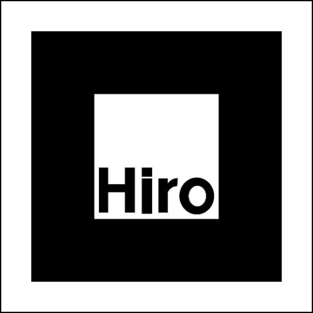
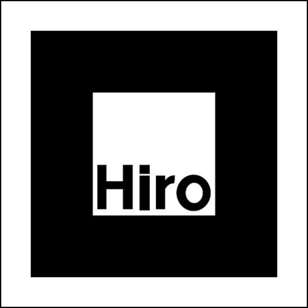
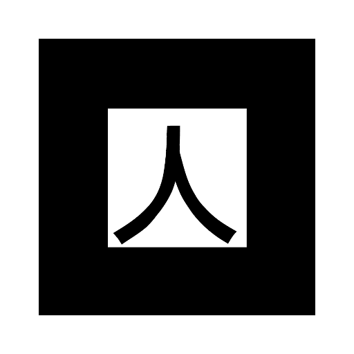
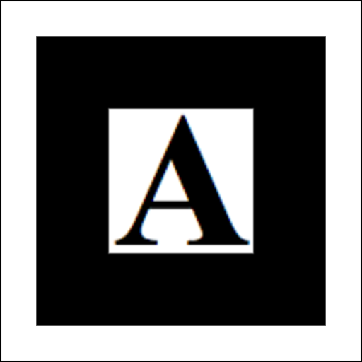
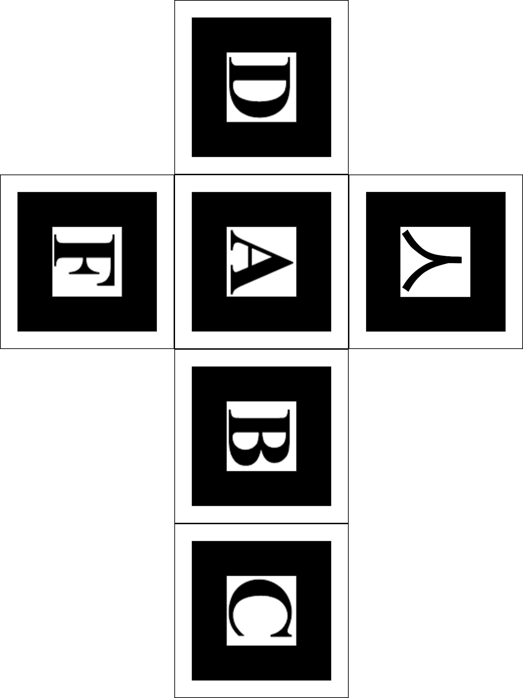

Basic Cube
A basic scene that superimposes a cube on a Hiro marker.

A basic scene that superimposes a cube on a Hiro marker.

A scene that superimposes different colored cubes on a Hiro, Kanji, and letter markers.
Marker-PDF-Printout


An image is positioned to cover a Hiro marker.
Use a 360 degree image as a aframe/AR.js sky that is positioned around the Hiro marker. THe hiro marker define the perspective and view in the 360 degree scene. Keep the marker in the view of the camera.

A rotating globe (illuminated by a point light) is positioned above a Hiro marker.
A rotating sun, moon and earth is positioned two dependent rotations above a Hiro marker.
A flat plane, with a video for a texture, is positioned to cover a Hiro marker.

A flat plane moves up and down above a Hiro marker; position and tint color are controlled by vertex and fragment shaders.
A 3D model (OBJ and MTL files) are loaded and displayed above a Hiro marker. OBJ defines the 3D model and the MTL creates the texture and the layer
A "hole in the floor" effect. Uses a box geometry to mask the hidden parts of the hole.
Another "hole in the floor" effect, using a plane geometry to mask the hidden parts of the hole. A rear side of a plane is translucent. This feature is used in the
A cylindrical "hole in the floor" effect, using a ring geometry to mask the hidden parts of the hole.
An animated effect (using shaders) that looks like water flowing
out from a central point and being absorbed into the floor. (No AR.)
An animated effect (using shaders) that looks like water flowing
out from a cylindrical hole (displayed above a Hiro marker), and being absorbed into the floor.
Video preview here.
Creates a "magic cube effect" that overlays a cube covered with six AR markers
in this pattern.
Video preview here.

Similar to the Rotating Globe example: places a globe over a Kanji marker. If Kanji marker is blocked, uses other markers (letter A and letter B) to position the globe.
Creates a rotating torus knot above a Kanji marker. The surface of the knot refracts the scene behind it.
Video preview here.
Creates a rotating torus knot above a Kanji marker. The knot casts a shadow onto the plane containing the marker.
Creates four colored bouncing basketballs around a Kanji marker. The balls cast shadows onto the plane containing the Kanji marker.
A basketball launches from a Hiro marker and falls towards a Kanji marker, following a parabolic path. The ball casts shadows, and a clipping plane (see above example) is used
to make the ball disappear into the marker. Place hiro-marker and the kanji-marker in front of the webcam.
A basketball launches from a Letter-A marker and falls towards a Letter-B marker, following a parabolic path. The ball casts shadows, and a clipping plane (see above example) is used
to make the ball disappear into the marker.
{kind=link}
{kind=link}
{kind=link}
{kind=link}
{kind=link}